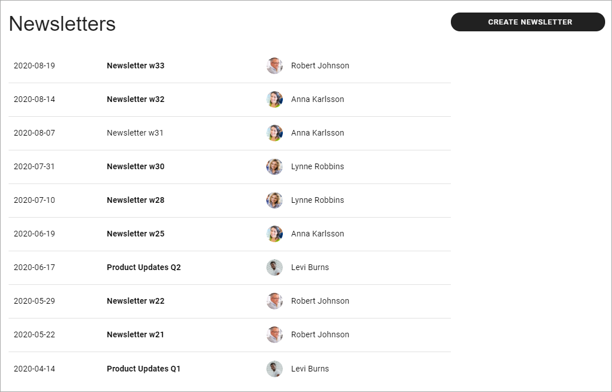
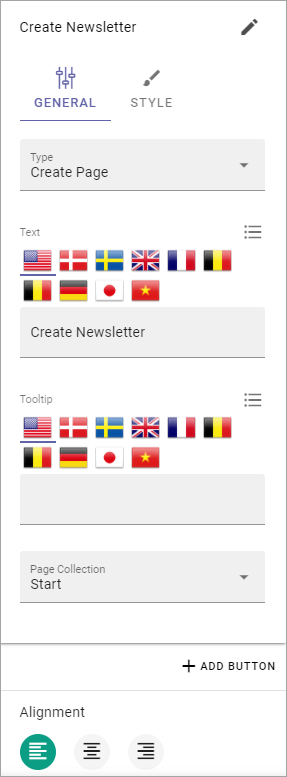
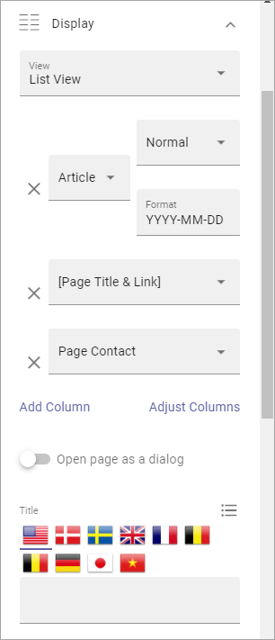
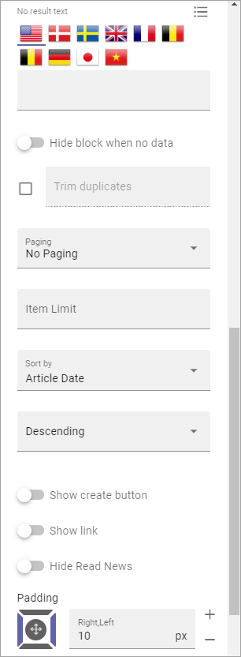

Using Newsletters¶
There’s a number of options and settings in Omnia you can use for a newsletter implementation, to send internally or externally through e-mail. These options and settings are described here, together with an implementation example.
A Page Type for Newsletters¶
You will need a Page Type set up for Newsletters. See the implementation example below for more information.
You use the options available in Omnia, see: Page Types
Important Note! When planning a Page Type that will be used as a base to send information in e-mails, be aware that only these three blocks are supported for e-mail send outs:
- Text.
- Page Rollup.
- Media.
Other blocks can of course be used on the page itself, but will then not be present in the e-mails.
Important and useful settings¶
To be able to send (Newsletter) pages this setting must be activated for the Page Collection:

When this setting is active, the following tab is displayed in the page settings so Newsletter Editors can enter the groups/e-mail adresses to send to:

In this field both groups and individual e-mail adresses can be entered. This tab is available for Page Editors, even using Write mode.
Page Rollup block for Newsletters¶
You will need a Page Rollup block on the Newsletter Editor’s page. When you set up the Page Rollup, Pick Pages and Pick in Write Mode are useful settings.

There’s also a View called Newsletter. This view is suitable for e-mailing.

More information about the Page Rollup block is found on this page: The Page Rollup block
Implementation example¶
Here’s a Newsletter implementation example. First an example of a newsletter archive:
The Page Type is set up with three blocks: a Text block for the heading, an Action Button block for the newsletter editor to use when creating a newslettter page, and finally a Page Rollup block to list the newsletter pages. The same Page type is used when en editor creates a newsletter, but then works slightly differently.
The Action Button has the following General settings:
And the following Style settings:

The Page Rollup block has the following settings for Query:

There are no settings for Social Period. The settings for Display are the following:
and these:
There are no Filter settings. For Page Variations, this setting is made:

Newsletters from the editor’s point of view¶
When a Newsletter Editor creates a newsletter, the first step is to create a new page for the newsletter, in this example by clicking the button CREATE NEWSLETTER, as seen in the image above:

(The Url is filled in automaically when the editor adds the Title for the new page.)
The new page can look something like this:

The editor can now use the blocks set up on the Page Type, in Write mode, or in Design mode. In this implementation example, a text block for the newsletter heading and another text block for the newsletter text is available, as well as a Page Rollup block (that’s “Pick Pages”.)
He or she enters some text for the newsletter, and picks the News pages to be sent in the newsletter, for example:

More information about how to use the Page Picker is found here: The Page Picker
If it’s set up that way, some edits to properties may be needed, and the email recipients must be added, everything available through Write mode and Design mode. The editor just clicks NEXT to cycle through the steps.

When it’s time to publish and send, the editor can preview the newsletter before publishing. The editor can also send the newsletter to someone for a last check before sending to the recipients.

When all is done, the editor then publishes to send the newsletter. If needed, the newsletter can be saved as a draft, as all other pages, and sent later. If Scheduled Publishing is set up, it can be used for newsletters as well.
You can find more information about publishing a page here: Publish Page Changes
Here’s an example of a newsletter: